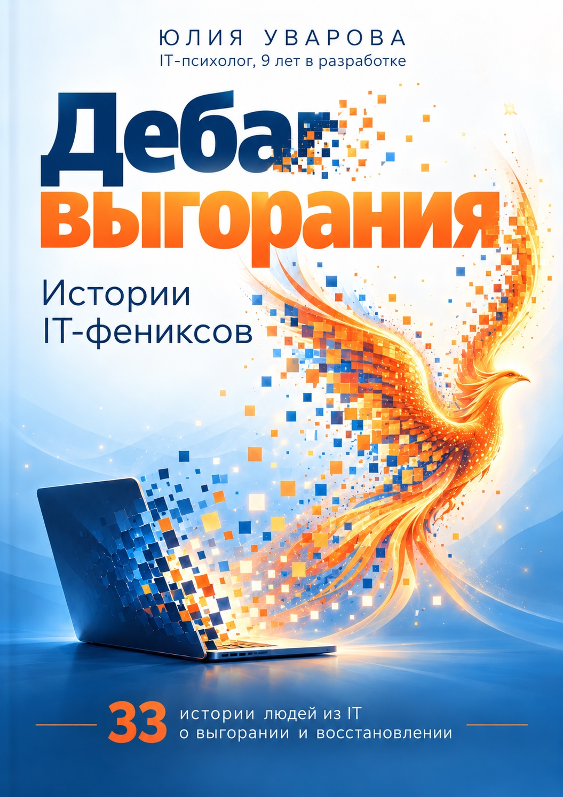

Дебаг выгорания
Истории IT-фениксов
Зачем читать
если работа выжимает
когда пропал смысл
чтобы раньше заметить выгорание
чтобы увидеть реальные пути выхода
33 человека из IT рассказывают, как они выгорели — и как выбирались. Не идеальные истории успеха, а реальные ситуации: работа на износ, потеря смысла, токсичная среда, невозможность остановиться, увольнение, смена роли и попытка снова почувствовать интерес к жизни.
Истории собраны в тематические блоки. После каждого — мои психологические комментарии: что могло привести человека в эту точку, что помогло и какие шаги можно попробовать, если узнаёшь в этих историях себя.
33 истории людей из IT
Интервью + психологический разбор
Причины выгорания и практические способы с ним работать